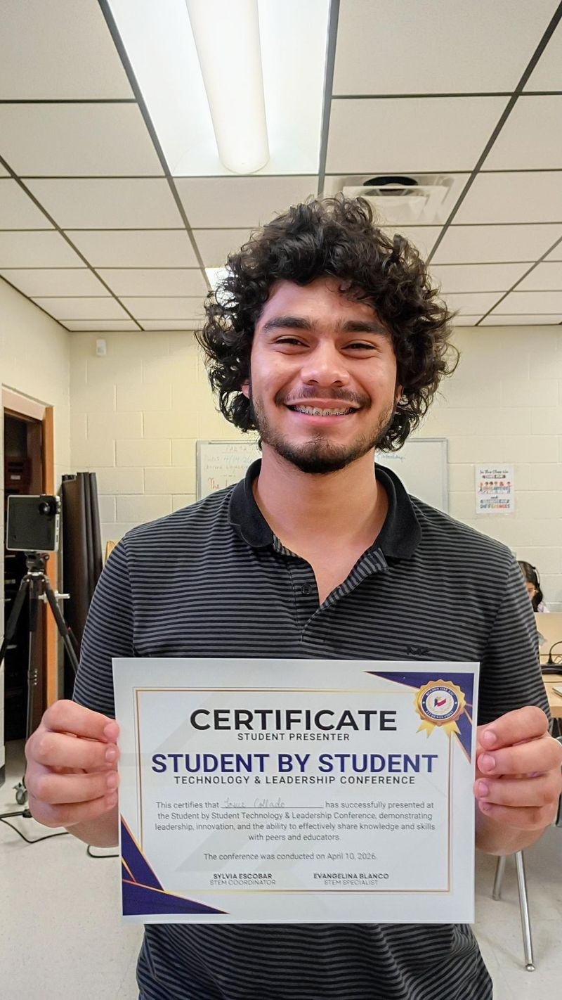
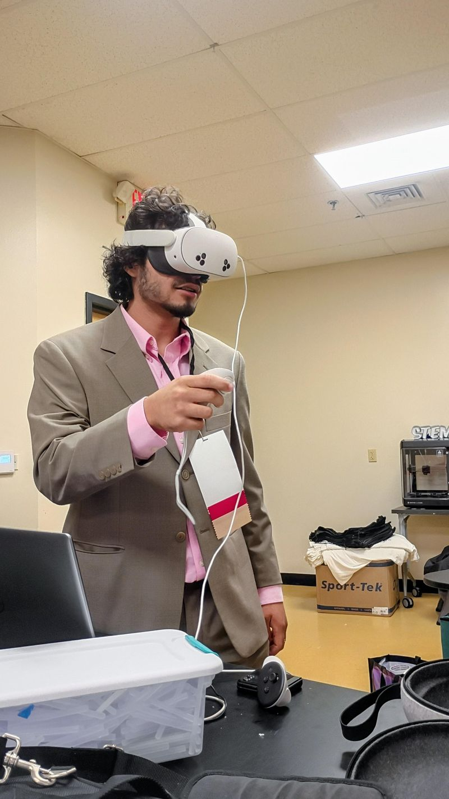
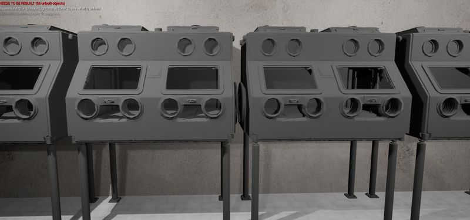
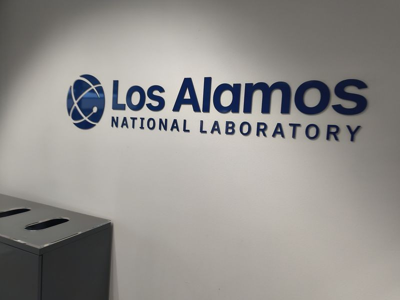
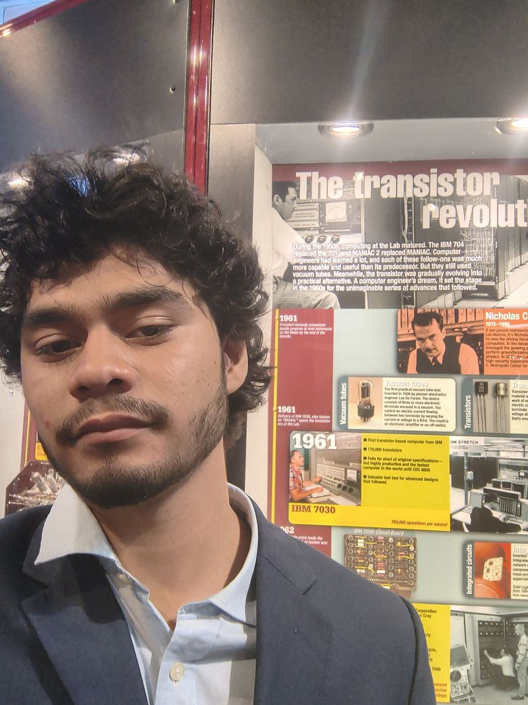
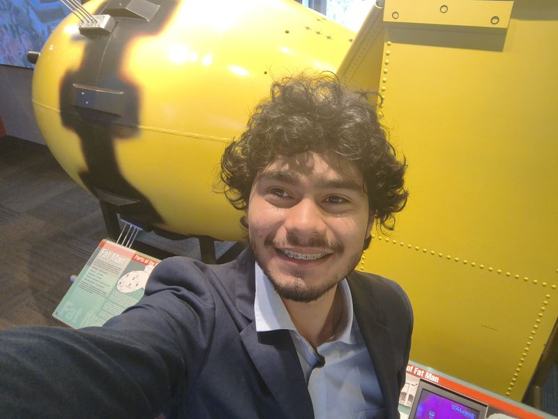

Dual Enrollment Engineering Student
Through the Science Academy, I enrolled in university-level Engineering and Computer Science coursework at UTRGV while still in high school. This means I'm earning college credit in real university classes alongside my high school diploma — ahead of the curve before I've even graduated.
Engineering + Computer Science
Courses span engineering fundamentals, programming, systems design, and applied computer science. I apply this directly to my internships and personal projects — building systems informed by real academic rigor, not just self-teaching alone.
A Head Start on a University Degree
By combining Science Academy with UTRGV dual enrollment, I'm building a foundation most students don't start until 18 or 19. Every credit I earn now is a semester I buy back later — and every concept I master now makes me a better engineer and developer today.
Key Takeaways
Dual enrollment at UTRGV pushed me to operate at a college level while still in high school — and I found out I could handle it. Sitting alongside students years older than me taught me to advocate for myself, ask better questions, and take ownership of my learning in a way that no one else could do for me. The visit to Los Alamos National Laboratory was a turning point: it made abstract career paths feel real and close. I came back knowing exactly what kind of engineer I want to become.
Experience in Photos






